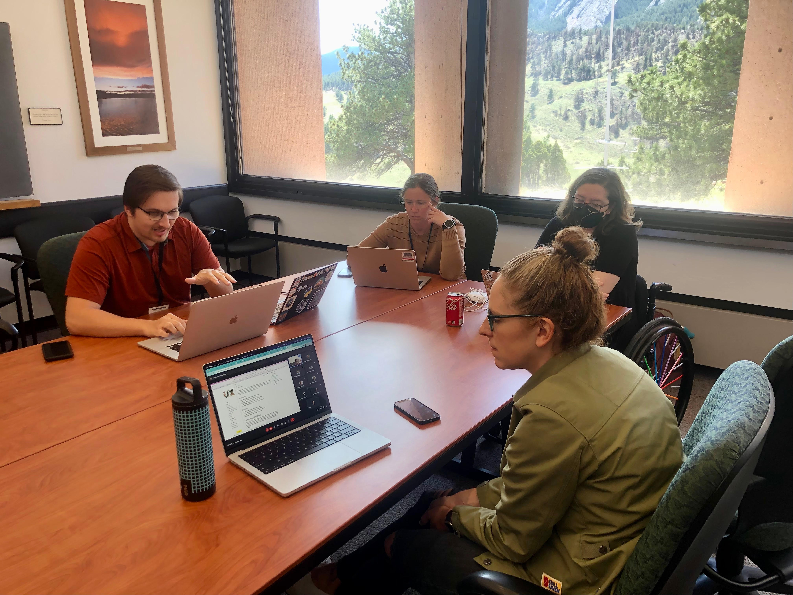

Posted in 2023
2024 Earth System Data Science (ESDS) Annual Event
- 21 November 2023
ESDS is hosting an annual event on January 18th and 19th (Thursday-Friday). This event will be hybrid, in-person in NCAR’s Mesa Lab Main Seminar Room as well as virtual.
The event will be hosted at the Mesa Lab Main Seminar Room, located at 1850 Table Mesa Dr, Boulder, CO 80305. In order to attend the event virtually, registered participants will be receiving an email from Taysia Peterson roughly one week prior to the event with Zoom details.
ESDS at SciPy 2023
- 28 August 2023
ESDS had a sizable presence at SciPy 2023 this year! Many of us shared our work in a formal capacity through tutorials, talks, and posters–most of these were recorded and have resources available publicly online, which we’ve compiled below. There were also lots of opportunities to make connections with people doing work in the broader scientific Python ecosystem outside of our organization. It was very cool to see lots of different tools, projects, and workflows.
The conference proceedings from this and prior years are now published as well. You can find published slides, posters, and articles for some of the conference’s presentations at the link above.
Thinking through CESM data access
- 16 August 2023
We want to read a large number of netCDF files, combine them to form a single dataset, and then analyze that. How do we think about it?
In pseudocode we want
Analyzing and Visualizing CAM-SE Output in Python
- 15 August 2023
We demonstrate a variety of options for analyzing and visualizing output from the Community Atmosphere Model (CAM) with the spectral element (SE) grid in Python. This notebook was developed for the ESDS Collaborative Work Time on Unstructured Grids, which took place on April 17, 2023. A recap of the related CAM-SE discussion can be found here.
Regrid CAM-SE output using map file

ESDS Office Hours Support
- 10 May 2023
A core goal of the ESDS community is to enhance the efficiency of the NCAR/UCAR workforce by fostering deeper collaboration across labs. ESDS Office Hours help achieve this goal by serving a dual purpose: helping scientists to more quickly overcome software challenges, which allows them to refocus on their scientific pursuits, and fostering connections among workers across different labs. Office Hours assistants benefit from having a scientific colleague as a “client”, enabling them to refine scientific use cases for their software development and fostering a greater sense of camaraderie. ESDS is always open to additional Office Hours assistants with diverse skill sets to join our team. If you are interested in becoming a part of the ESDS Office Hours team or if you would like to explore a similar service for your own team, this blog post is for you.
If you’re curious about the ESDS Office Hours system, see our previous New Office Hours Appointment System blog post).

Recap: Unstructured Grid Collaborative Work Time
- 05 May 2023
ESDS hosted our first Collaborative Work Time event on April 17, 2023. The topic of the session was “Working With Unstructured Grids”. Our goal is to encourage cross-lab collaboration and build lasting science-software partnerships.
The event was hybrid with in-person attendees in the Damon Room at the Mesa Lab. A lucky overlap with the Improving Scientific Software conference, meant that collaborators from the Department of Energy were also able to attend in-person.
Using Kerchunk with CESM Timeseries Data on the Cloud
- 15 March 2023
We benchmark reading a subset of the CESM2-Large Ensemble stored as a collection of netCDF files on the cloud (Amazon / AWS) from Casper. We use a single ensemble member historical experiment with daily data from 1850 to 2009, with a total dataset size of 600+ GB, from 13 netCDF4 files.
We read in two ways:
Virtual aggregate CESM MOM6 datasets with kerchunk
- 07 March 2023
This notebook is adapted from the work by Lucas Sterzinger (an NCAR SIParCS intern in 2021).
This notebook was updated to